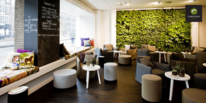
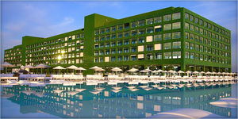
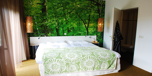
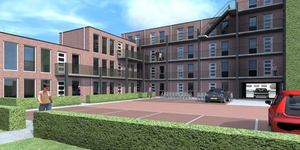
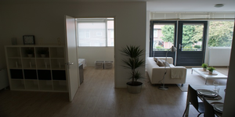
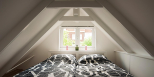
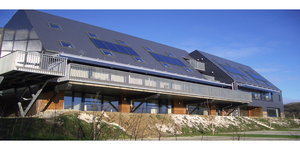
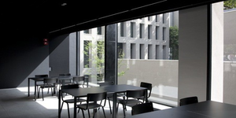
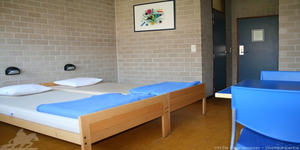

Tijdens het congres zijn er verschillende accommmodaties beschikbaar voor boekingen.
Er kan gekozen worden uit 3 verschillende accommodaties:
Hotel De Groene Ruijter staat bekend om haar duurzaamheid. Dit hotel is sinds haar oprichting bezig met het gebruik van groene energie en probeert haar bezoekers daar ook op attent te maken. Het hotel beschikt over meer dan 100 tweepersoonskamers die allemaal ingericht zijn naar het hun motto "Groen voorop!". Als u zich bewust bent uw omgeving en u wilt daar zuinig mee omgaan, dan is Hotel De Groene Ruijter voor u bij uitstek geschikt.
  Dit appartementencomplex staat bekend om haar losse gang van zaken. Als u na het congres van plan bent nog een drankje te nuttigen ergens in de stad of op het congresterrein, is het bij deze accommodatie geen probleem als u 's nachts wat luidruchtig thuis komt. Alle muren zijn voorzien van extreem geluidsdicht materiaal zodat de gasten totaal geen last hebben van elkaar. Het appartementencomplex beschikt over 50 appartementen voor maximaal 4 personen.
  "Zoals het klokje thuis tikt, tikt het nergens", behalve bij Jeugdherberg Het Klokje, aldus het management van de jeugdherberg. De jeugdherberg staat er om bekend een huiselijke sfeer te hebben en aan alle gezinswensen te voldoen. Als u van plan bent om met uw kinderen naar het congres te komen, is Jeugdherberg Het Klokje wellicht voor u de beste optie.
  